Iterazioni
Screenshot del prototipo di ricerca per testo libero, dalla più recente alla prima. Clicca un'immagine per vederla a grandezza piena.
18 · v2: numeri tra parentesi nei chip "Trovato in"
7 ottobre 2026 ultima- In v2 i numeri dei chip "Trovato in" sono tra parentesi: Nome testata (63), Email giornalista (2).

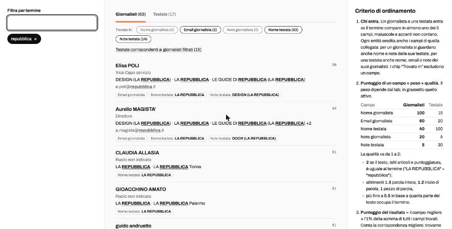
17 · v2: input senza placeholder
7 ottobre 2026- In v2 la casella "Filtra per termine" non ha più il testo segnaposto "Nome, email, testata, note…".

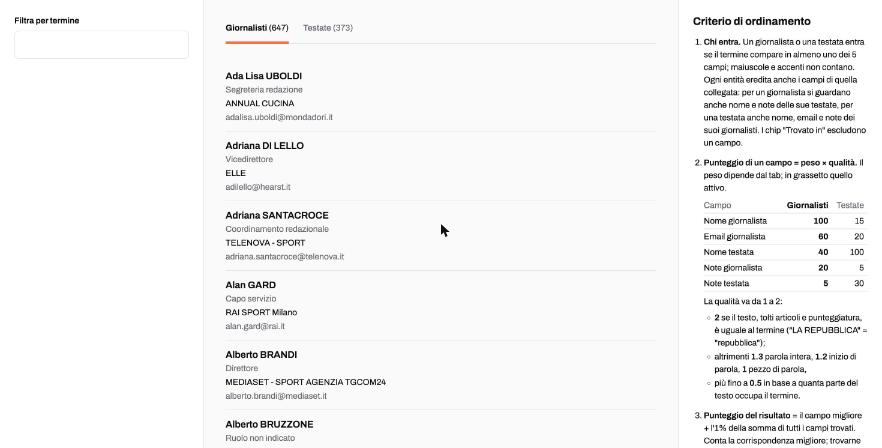
16 · v2: senza spiegazione, con il numero di testate
7 ottobre 2026- In v2 tolto il testo che appariva sopra i tab quando si filtra ("Stessi risultati nei due tab, ordine diverso…"). I tab ora sono il primo elemento della colonna e partono alla stessa altezza delle altre due.
- Il link diventa "Testate corrispondenti ai giornalisti filtrati (15)": il numero è quello delle testate nella modale e segue i chip "Trovato in".

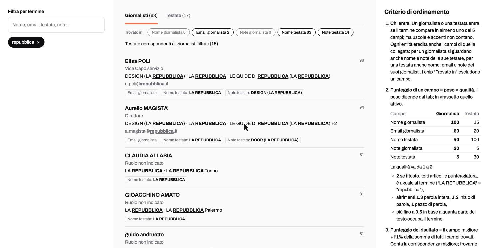
15 · v2: link alle testate corrispondenti
7 ottobre 2026- In v2, nel tab Giornalisti, sotto i chip "Trovato in" c'è il link "Testate corrispondenti ai giornalisti filtrati". Compare solo quando c'è un filtro attivo.
- Il link ha lo stile dei link del sito: colore del testo, sottolineatura grigia, accento corallo solo all'hover.
- Al clic si apre una modale con le testate per cui lavorano i giornalisti filtrati (15 con "repubblica", contro le 17 del tab Testate), ordinate per numero di giornalisti filtrati che ci lavorano.
- La modale si chiude con la ×, con Esc o cliccando sul fondo scuro. Il fondo usa il colore overlay del brand; la modale è piatta, senza ombre.
- Il link segue i chip "Trovato in": se escludi un campo, cambia l'elenco dei giornalisti filtrati e quindi quello delle testate.

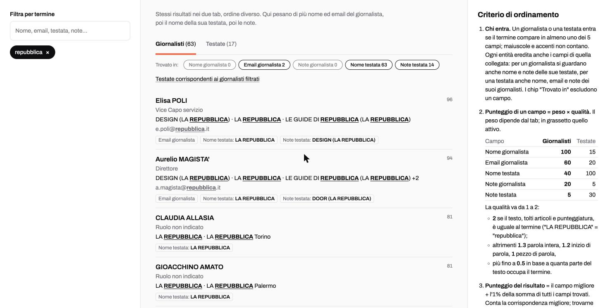

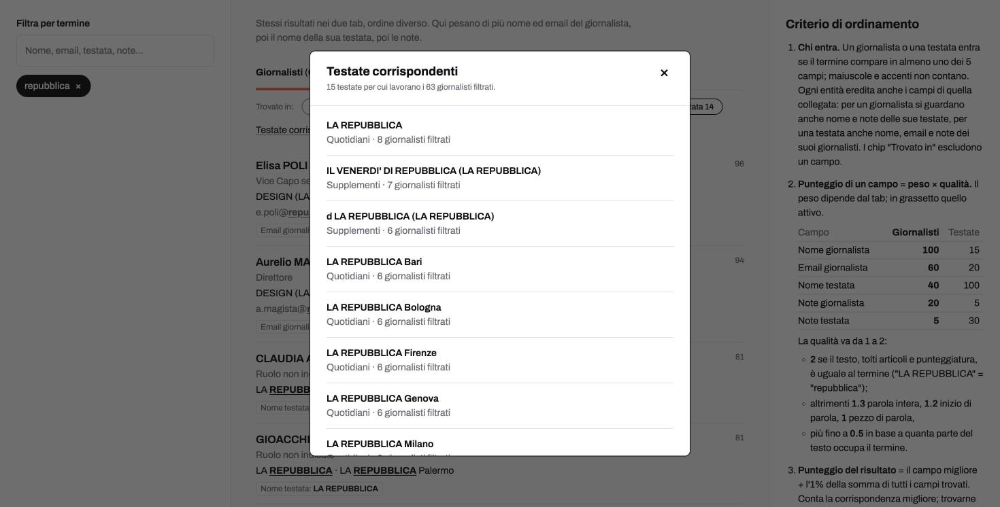
14 · v2: senza testo di aiuto sotto la casella
7 ottobre 2026- In v2 tolto il testo "I risultati si aggiornano mentre scrivi. Premi Invio per fissare il termine e aggiungerne un altro." sotto la casella.

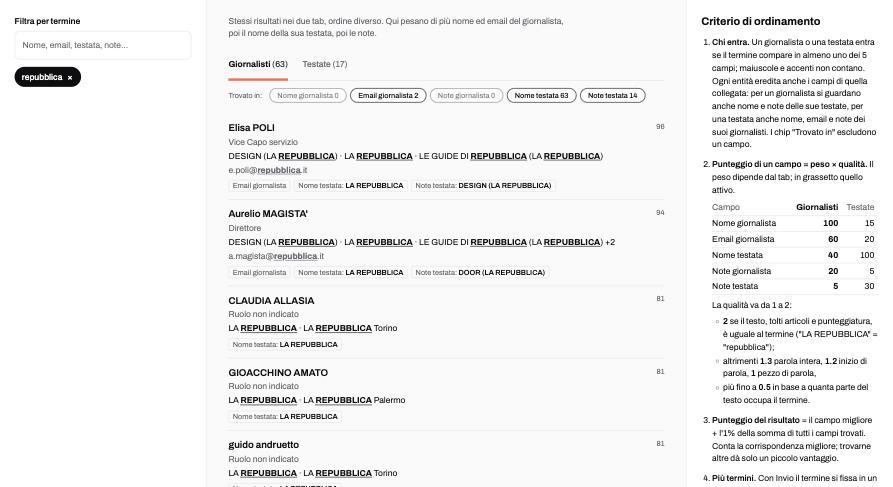
13 · v2: le tre colonne partono alla stessa altezza
7 ottobre 2026- In v2 tolti i margini sopra i primi elementi delle prime due colonne: l'etichetta "Filtra per termine" e la spiegazione sopra i tab (o i tab stessi, quando la spiegazione non c'è).
- Lo spazio tra la spiegazione e i tab ora sta sotto la spiegazione.
- Misurato nel browser: etichetta, spiegazione e titolo "Criterio di ordinamento" partono tutti a 24px dal bordo alto.

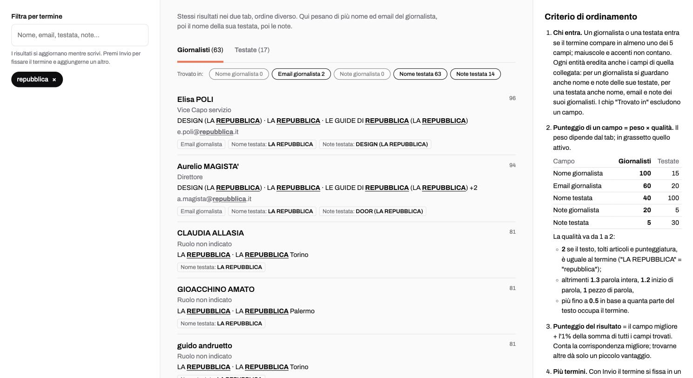
12 · v2: sidebar senza titolo
7 ottobre 2026- In v2 sono stati tolti dalla sidebar il titolo "Banca Dati" e il sottotitolo "Prototipo della ricerca per testo libero."
- "Come ordiniamo i risultati" diventa "Criterio di ordinamento".

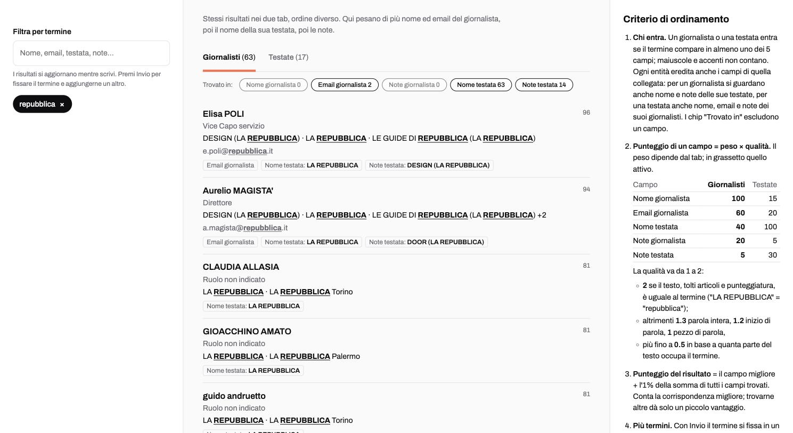
11 · Prototipo v2: solo "1 input"
7 ottobre 2026Nuova pagina ricerca-proto-v2.html, copia di ricerca-proto.html con una sola modalità.
- In sidebar resta solo la casella del caso d'uso "1 input": niente tab "2 input" e "1 input + tendina", niente tendina dei suggerimenti.
- L'etichetta "Cerca" diventa "Filtra per termine".
- La colonna "Come ordiniamo i risultati" è sempre visibile.

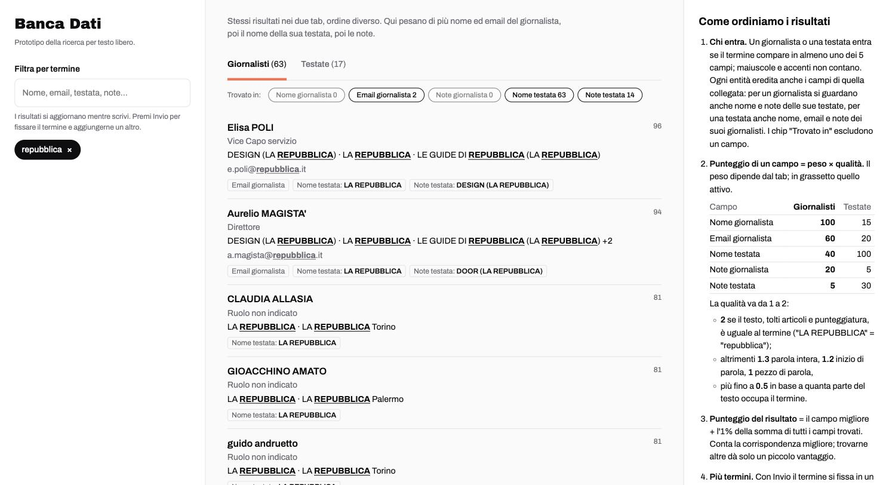
10 · Colonna del criterio, testo a 14px
7 ottobre 2026- Nella colonna "Come ordiniamo i risultati" il testo, la tabella e l'esempio passano a 14px, il titolo a 18px.

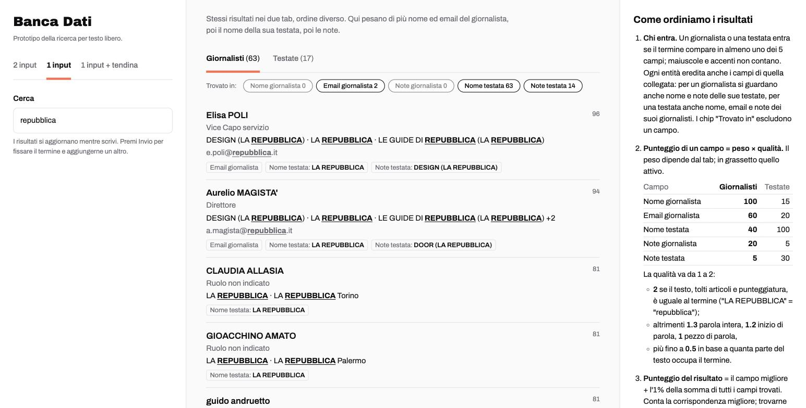
09 · Colonna del criterio, font più grande
7 ottobre 2026- Nella colonna "Come ordiniamo i risultati" il font è aumentato di 1px: titolo 17px, testo e tabella 13px.

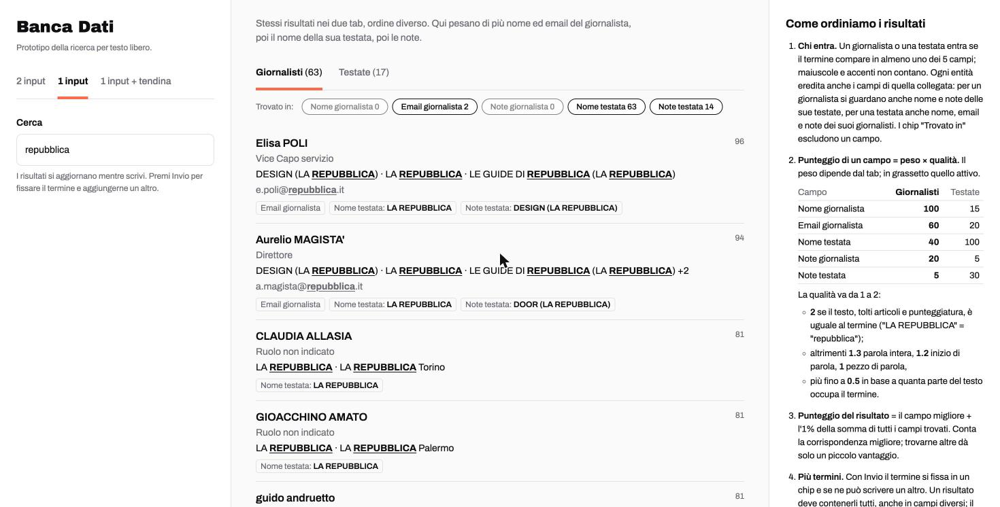
08 · "1 input": Invio fissa il termine in un chip
7 ottobre 2026- In "1 input" Invio sposta il termine in un chip nero sotto la casella e svuota la casella. La × sul chip toglie il filtro.
- Si possono fissare più termini: un risultato deve contenerli tutti (AND), anche in campi diversi. Il punteggio è la somma dei punteggi dei singoli termini.
- Mentre scrivi un nuovo termine, i risultati si filtrano già insieme ai chip fissati.
- Backspace a casella vuota toglie l'ultimo chip.
- Nella colonna del criterio c'è un nuovo punto, "Più termini".

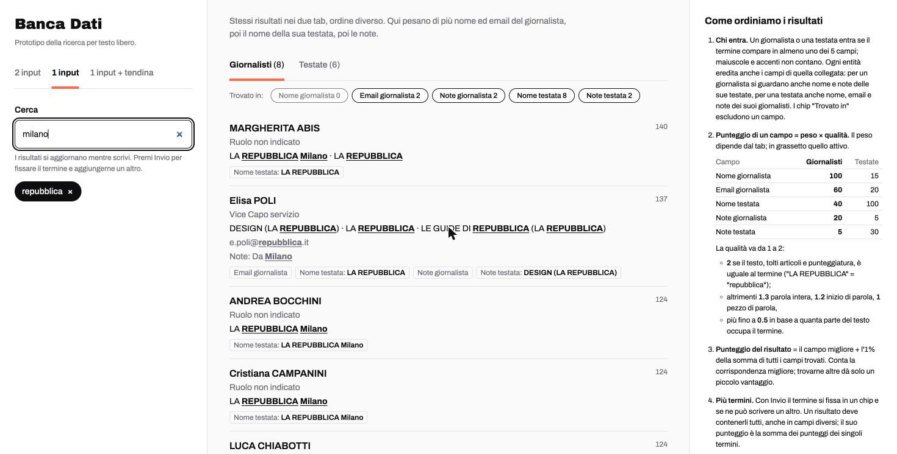

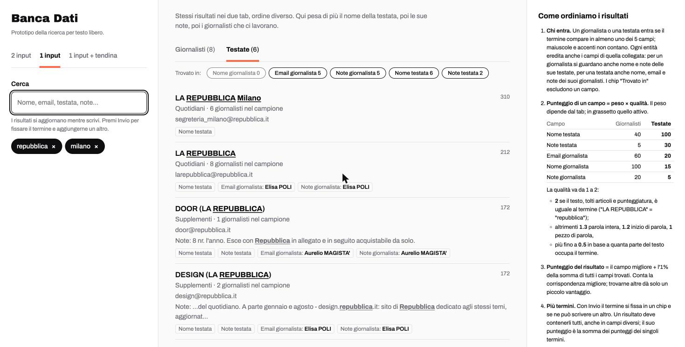
07 · "1 input" filtra mentre scrivi
7 ottobre 2026- In "1 input" i risultati si aggiornano a ogni tasto, da 2 caratteri in su, dopo una pausa di 150 ms. Non serve più premere Invio.
- I chip "Trovato in" restano come li hai impostati mentre scrivi e si azzerano solo quando svuoti la casella.
- Il testo sotto la casella ora dice "I risultati si aggiornano mentre scrivi, in tutti i campi."

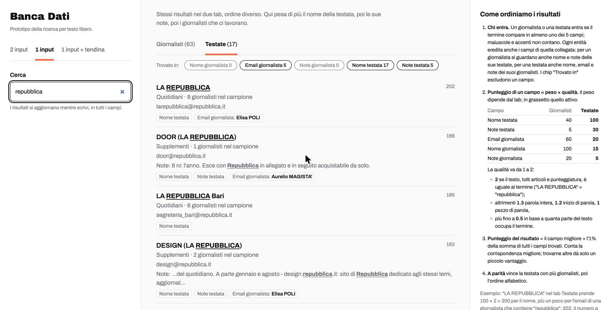
06 · Terza modalità e colonna del criterio
7 ottobre 2026- Tre modalità: "2 input", "1 input" (senza tendina, si cerca con Invio) e "1 input + tendina" (la vecchia "1 input").
- Solo in "1 input" compare una terza colonna a destra, larga quanto la sidebar, che spiega come vengono ordinati i risultati. La tabella dei pesi è generata dai pesi veri del prototipo e mette in grassetto il tab attivo.

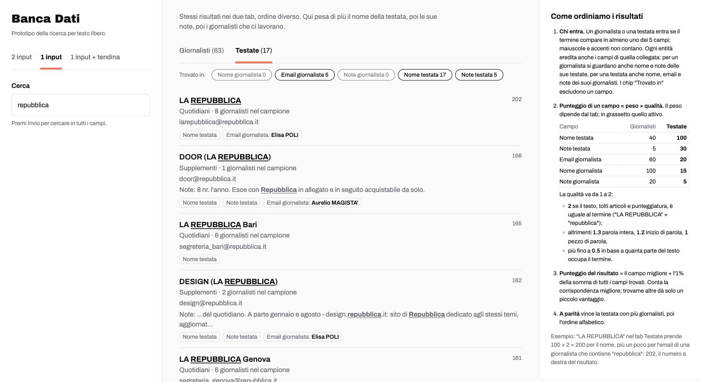

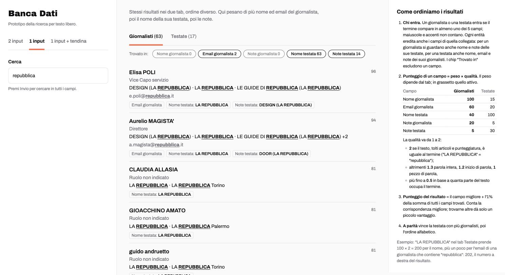

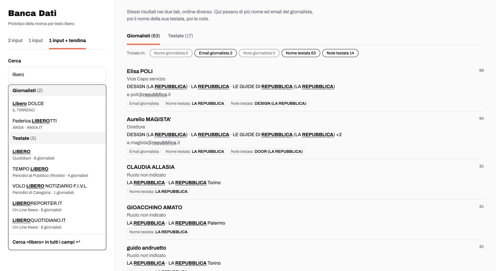
05 · Ranking: copertura, articoli, importanza
7 ottobre 2026Con "repubblica", "LA REPUBBLICA" era quinto: tutte le testate avevano lo stesso punteggio e a parità vinceva l'ordine alfabetico. Ora, in entrambe le modalità:
- Copertura: conta quanta parte del nome copre la parola cercata. Un nome "pulito" batte uno lungo.
- Articoli e preposizioni ignorati (la, il, di, d…): "LA REPUBBLICA" conta come corrispondenza esatta di "repubblica".
- Spareggio per importanza: a parità di punteggio vince la testata con più giornalisti. Nel campione è un'approssimazione, perché per ogni testata ne ho scaricati al massimo 6.

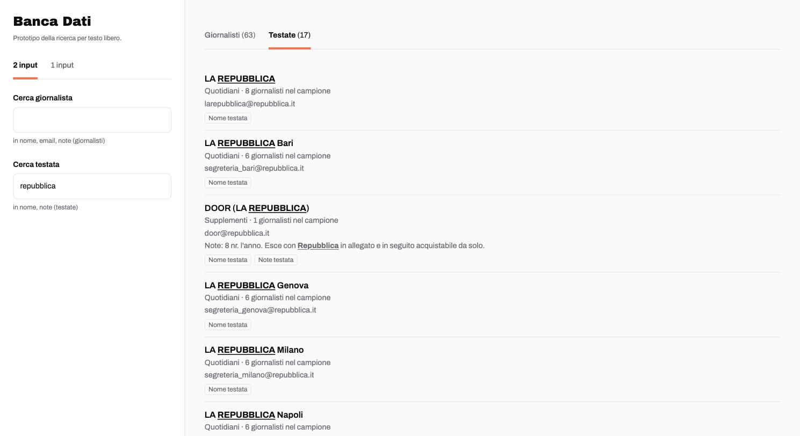

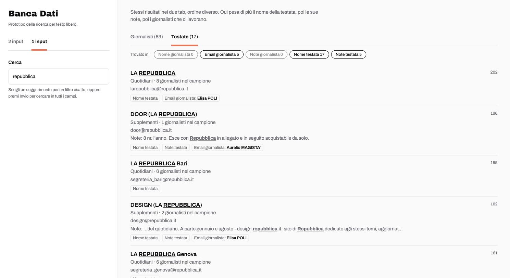
04 · Suggerimenti: prima i giornalisti
7 ottobre 2026- Nella tendina dei suggerimenti i giornalisti vengono prima delle testate.
- Ogni gruppo ha un'intestazione in grassetto su fondo grigio, e una linea lo separa dal gruppo successivo.
- Il numero di suggerimenti è tra parentesi: Giornalisti (2), Testate (5).

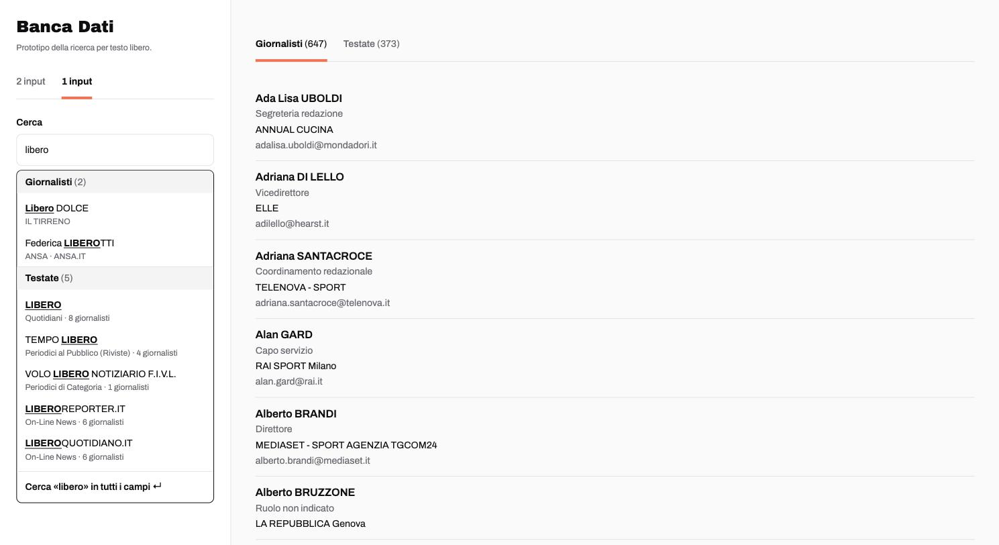

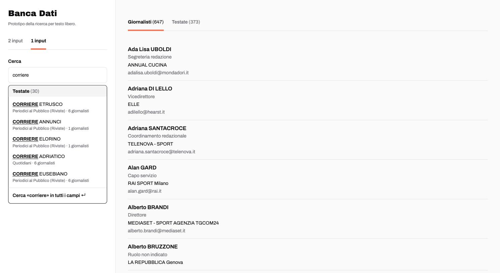
03 · Interruttore come tab
7 ottobre 2026- Le voci dell'interruttore ora si chiamano "2 input" e "1 input".
- L'interruttore ha lo stesso stile dei tab Giornalisti e Testate: testo, con una sottolineatura corallo sulla voce attiva.

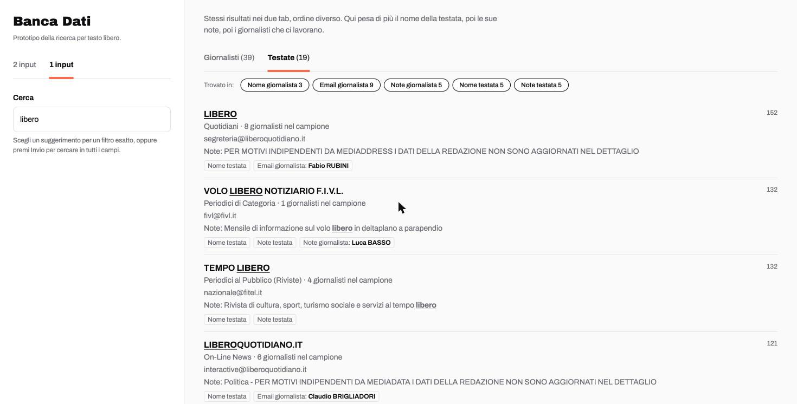

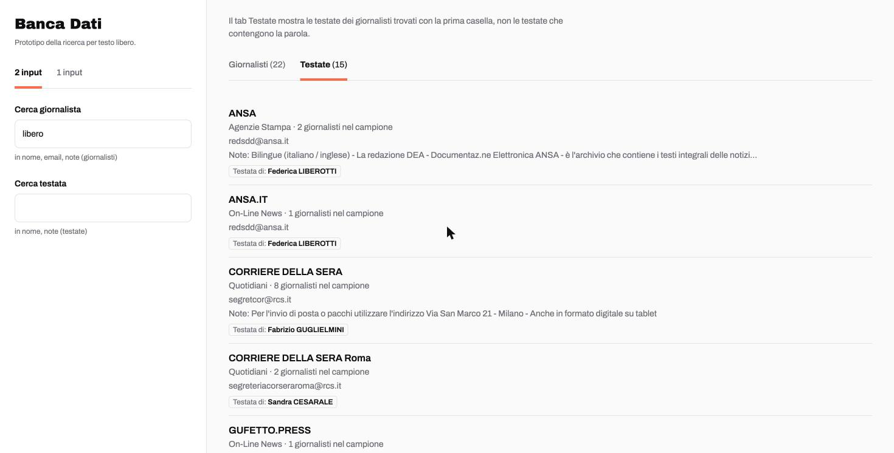
02 · Sidebar più pulita
7 ottobre 2026- Tolta la sezione "Prova con" dalla sidebar.
- Sottotitolo accorciato in "Prototipo della ricerca per testo libero."
- Tolto "Le due caselle sono in AND." dalla spiegazione della versione attuale.
- I numeri accanto ai tab sono tra parentesi: Giornalisti (39), Testate (19).

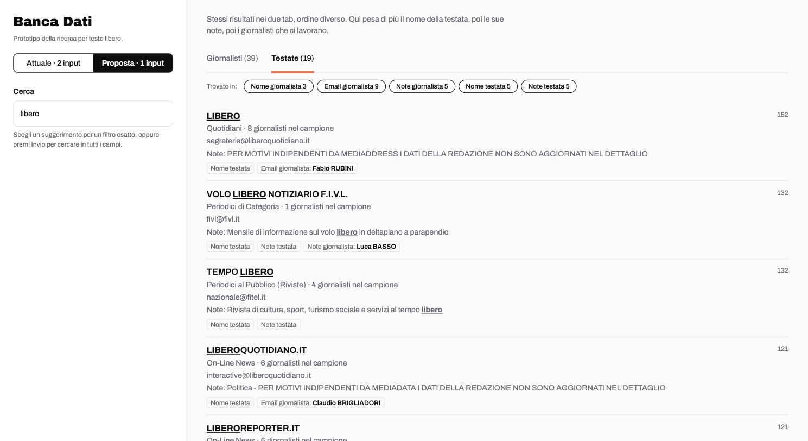

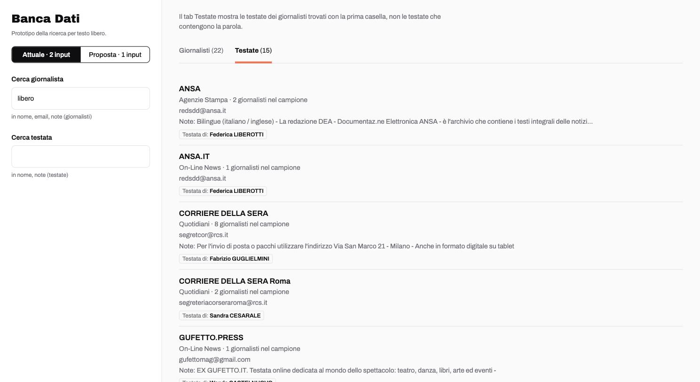
01 · Due versioni a confronto
7 ottobre 2026Primo prototipo su un campione di staging (373 testate, 647 giornalisti). Un interruttore passa dalla versione attuale a quella proposta.
- Attuale: due caselle in AND, una sui campi del giornalista e una su quelli della testata.
- Proposta: una casella con suggerimenti divisi in Testate e Giornalisti. Con Invio cerca in tutti e 5 i campi e ordina per rilevanza, con pesi diversi nei due tab. I chip "Trovato in" escludono un campo.

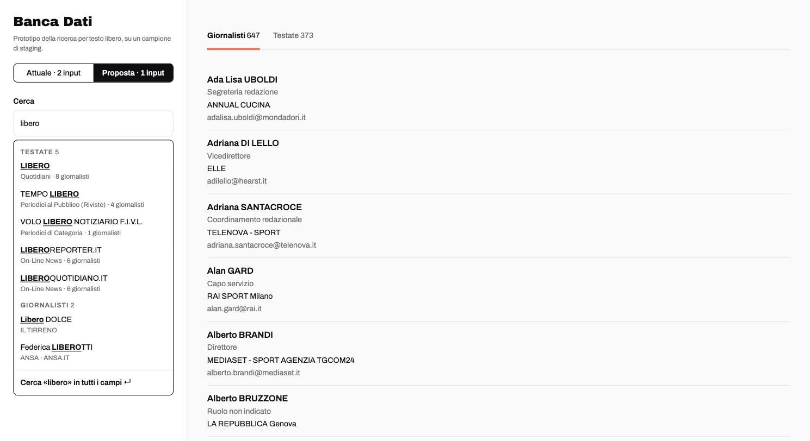

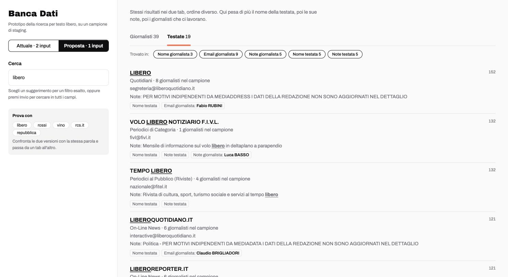

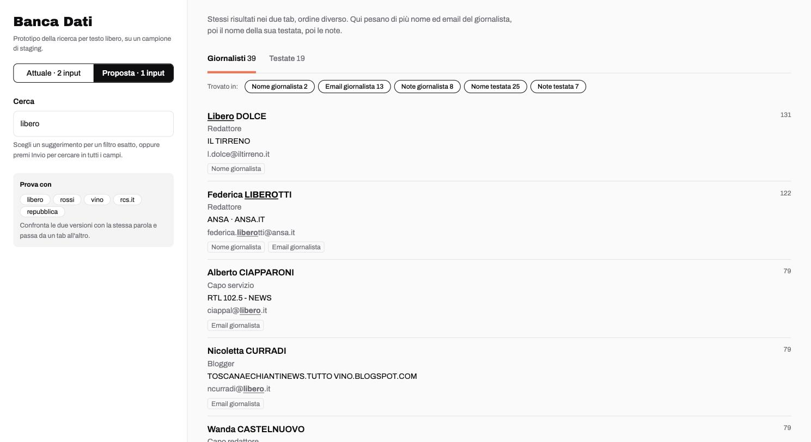

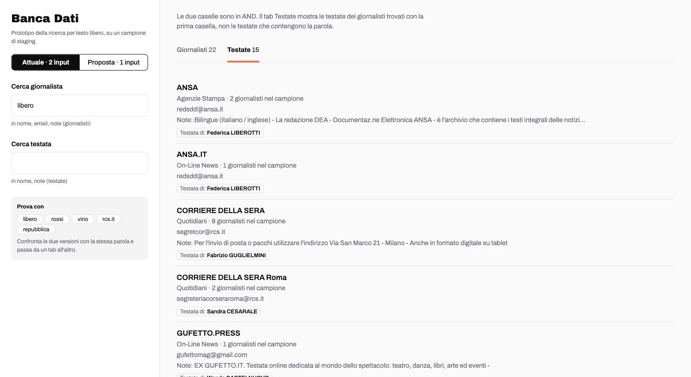